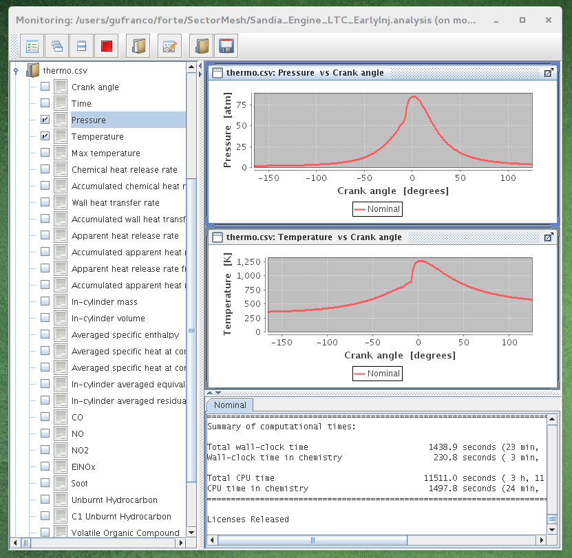
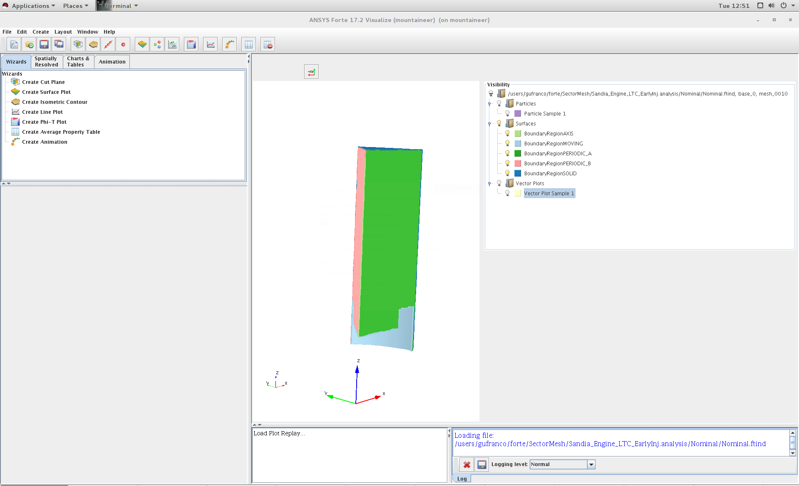

Engineering: ANSYS/Forte¶
Overview¶
ANSYS Forte is the only CFD simulation package for internal combustion engines that incorporates proven ANSYS Chemkin-Pro solver technology – the gold standard for modeling and simulating gas phase and surface chemistry. Forte includes state-of-the-art automatic mesh generation (AMG), including solution adaptive mesh Refinement (SAM) and geometry-based adaptive mesh refinement (AMR). While legacy engine-combustion CFD simulations utilize chemistry solvers that are too slow to handle the chemistry details required for accurate predictions of ignition and emissions, Forte enables the use of multicomponent fuel models to combine with comprehensive spray dynamics – without sacrificing simulation time-to-solution.
Features¶
- Automatic mesh generation that eliminates weeks of effort typically spent on manual mesh preparation
- Embedded Chemkin-Pro solver technology that provides the computational speed required for predictive engine simulations
- True multicomponent fuel-vaporization models that enable a self-consistent representation of the physical spray and the kinetics for accurate prediction of fuel effects
- Advanced spray models that dramatically reduce grid and time-step dependency when compared to existing approaches
- The ability to track soot particle nucleation, growth, agglomeration and oxidation without a compute-time penalty to predict particle size and number
Tutorial¶
This tutorial will describe the steps needed to complete the execution of the first examples from the tutorial documentation.
Connect to Mountaineer¶
ssh -X username@mountaineer.hpc.wvu.edu
The `-X` is necessary to get access to the graphical interface needed to prepare the simulation.
Execute the ANSYS/Forte GUI¶
First, we need to create a directory for the simulation we want to perform. Lets create for example a directory called ‘forte’ and inside create a subdirectory for our first simulation. The first simulation will be ‘SectorMesh’
mkdir $HOME/forte
mkdir $HOME/forte/SectorMesh
The Official Tutorials for Forte are in ‘/software/ansys_central/Forte_Tutorials’, we will copy Sandia_Engine_LTC_EarlyInj.ftsim to the directory we just create.
cp /software/ansys_central/Forte_Tutorials/Quick-start_SectorMesh/Sandia_Engine_LTC_EarlyInj.ftsim $HOME/forte/SectorMesh
We will use this input for this tutorial, now, we can launch the GUI using the command:
forte.sh &
The ‘&’ will free your terminal so you can enter more commands there. Otherwise you will need another terminal when we actually launch the simulation. Once you execute ‘forte.sh’ you should get a window with 3 buttons: Simulate, Monitor and Visualize.
Simulate Window
Click on Simulate button and open the file `Sandia_Engine_LTC_EarlyInj.ftsim` You should get the ‘Simulate’ window. Click on Menu ‘File - Open…’ and search for the input file ‘Sandia_Engine_LTC_EarlyInj.ftsim’, in your directory ‘forte/SectorMesh’. The main window will display the mesh, you get on the log panel messages such
Loading fuel library...
Fuel library successfully loaded from
/array/software/ansys_central/v172/install/ansys_inc/v172/reaction/forte.linuxx8664/data/fuel_library.cks
Initializing
Initializing
Now we are ready to create the scripts and run the simulation on Mountaineer
Simulate Window
Prepare simulation files¶
Click on “Run Simulation” in the tree panel. The options for runnig the simulation appear in a panel down the tree panel. There are several options that we need to change. Select Parallel instead of Serial. Change to ‘Prepare Batch Scripts Only’. There is also a field under ‘MPI Args’, change that to the number of cores that you want use. 8 could be a reasonable number for this small simulation. Click the Green triangle under ‘Prepare’.
Now, we need to go back to the terminal and see the effects of preparing the simulation runs. A new directory is created called ‘Sandia_Engine_LTC_EarlyInj.analysis’. Inside that directory there are one file called ‘Sandia_Engine_LTC_EarlyInj.ftsim’ and a directory called ‘Nominal’ The contents of Nominal are:
chem.inp
chem.out
fuel_lib_chem.inp
fuel_lib_chem.out
fuel_lib_gas.asc
fuel_lib_xml.out
gas.asc
PREPARED
run_env.bat
run_env.sh
run_mpi.bat
run_mpi.sh
Sandia_Engine_LTC_EarlyInj.ftsim
therm.dat
xml.out
Now, we need to prepare the submission script for Mountaineer Go to ‘Nominal’ directory and create the script file
cd $HOME/forte/SectorMesh/Sandia_Engine_LTC_EarlyInj.analysis/Nominal
cat <<EOF >runjob.pbs
#!/bin/sh
#PBS -N FORTE
#PBS -l nodes=1:ppn=8,walltime=01:00:00
#PBS -m ae
##PBS -M username@mail.wvu.edu
#PBS -q hour
module load ansys/forte/17.2
cd $PBS_O_WORKDIR
sh run_mpi.sh
EOF
You should remove one # from ##PBS -M username@mail.wvu.edu and
change the email address in order to receive notifications when job
finish. We are requesting 1 hour (walltime=01:00:00), using one node
(nodes=1) and creating 8 MPI processes (ppn=8). Those values should be
adapted to the needs of your job. If you ask for more than one hour you
must change also the queue where you are submiting the jobs (#PBS -q
hour), consider for example queues ‘day’ and ‘week’ if your jobs need
more time to complete.
Submit the job with
qsub runjob.pbs
The job is submitted to the queue, it will start running when enough resources are free to start executing your job. You can always monitor the status of your submission with
qstat -u username
Once your job simulation start execution, you can monitor the progress by looking at the MONITOR file, one way of doing that is using tail command.
tail -f MONITOR
You should see something like
7852 116.38 3.908E-02 5.000E-06 Maximum reached 953.80 330.53 0.4565 9.79E+00 15729 190
7853 116.42 3.909E-02 5.000E-06 Maximum reached 953.70 330.51 0.4563 9.79E+00 15729 191
7854 116.45 3.909E-02 5.000E-06 Maximum reached 953.60 330.49 0.4556 9.78E+00 15729 194
7855 116.49 3.910E-02 5.000E-06 Maximum reached 953.50 330.48 0.4557 9.78E+00 15729 191
7856 116.52 3.910E-02 5.000E-06 Maximum reached 953.41 330.46 0.4560 9.78E+00 15729 190
7857 116.56 3.911E-02 5.000E-06 Maximum reached 953.31 330.44 0.4557 9.78E+00 15729 190
7858 116.60 3.911E-02 5.000E-06 Maximum reached 953.21 330.42 0.4549 9.77E+00 15729 188
7859 116.63 3.912E-02 5.000E-06 Maximum reached 953.12 330.41 0.4552 9.77E+00 15729 188
Cycle# CA[deg] Time[s] Step[s] Step constraint MaxT[K] MinT[K] MaxP[MPa] MaxV[m/s] #Cells #Clusters
7860 116.67 3.912E-02 5.000E-06 Maximum reached 953.02 330.38 0.4550 9.77E+00 15729 188
7861 116.70 3.913E-02 5.000E-06 Maximum reached 952.92 330.37 0.4551 9.76E+00 15729 188
7862 116.74 3.913E-02 5.000E-06 Maximum reached 952.82 330.35 0.4542 9.76E+00 15729 185
7863 116.78 3.914E-02 5.000E-06 Maximum reached 952.72 330.33 0.4542 9.76E+00 15729 187
7864 116.81 3.914E-02 5.000E-06 Maximum reached 952.63 330.32 0.4544 9.76E+00 15729 188
7865 116.85 3.915E-02 5.000E-06 Maximum reached 952.53 330.29 0.4541 9.75E+00 15729 186
7866 116.88 3.915E-02 5.000E-06 Maximum reached 952.43 330.28 0.4535 9.75E+00 15729 186
7867 116.92 3.916E-02 5.000E-06 Maximum reached 952.33 330.26 0.4534 9.75E+00 15729 188
7868 116.96 3.916E-02 5.000E-06 Maximum reached 952.23 330.25 0.4534 9.74E+00 15729 186
7869 116.99 3.917E-02 5.000E-06 Maximum reached 952.13 330.23 0.4538 9.74E+00 15729 187
Cycle# CA[deg] Time[s] Step[s] Step constraint MaxT[K] MinT[K] MaxP[MPa] MaxV[m/s] #Cells #Clusters
7870 117.03 3.917E-02 5.000E-06 Maximum reached 952.03 330.21 0.4535 9.74E+00 15729 189
7871 117.06 3.918E-02 5.000E-06 Maximum reached 951.93 330.19 0.4527 9.74E+00 15729 192
7872 117.10 3.918E-02 5.000E-06 Maximum reached 951.83 330.18 0.4528 9.73E+00 15729 192
7873 117.14 3.919E-02 5.000E-06 Maximum reached 951.73 330.16 0.4530 9.73E+00 15729 192
The screen will update when the execution advances. When simulation finishes you should get a summary of execution like
============================================================
Engine Summary Data:
------------------------------------------------------------
Cylinder Index 1
------------------------------------------------------------
Power 9.84048 [kW]
IMEP 0.42126 [MPa]
Fuel Mass 5.35000E-002 [g/cyc]
Fuel Lower Heating Value 44.52000 [kJ/g]
Gross ISFC 195.72213 [g/kW-h]
ISFC(IVC->EVO) 223.19199 [g/kW-h]
Total Chemical Heat Release 2376.63829 [J]
Total Heat Release From P-V 1297.21755 [J]
Combustion Efficiency 0.99782 []
Thermal Efficiency 0.41315 []
Max Pressure 8.62842 [MPa]
Max Temperature 1262.21947 [K]
Max Pressure Rise Rate 0.84582 [MPa/deg]
CA @ 2% Heat Release -14.97600 [deg ATDC]
CA @ 10% Heat Release -8.99000 [deg ATDC]
CA @ 30% Heat Release -5.98561 [deg ATDC]
CA @ 50% Heat Release -5.98561 [deg ATDC]
CA @ 90% Heat Release 0.02813 [deg ATDC]
10%-90% Heat Release Duration 9.01813 [deg]
Soot @ EVO 3.66015E-004 [g/kg-f]
7.16372E-005 [g/kW-h]
8.72851E-006 [ppm]
EINOx @ EVO 3.39138E+000 [g/kg-f]
6.63767E-001 [g/kW-h]
2.09039E+001 [ppm]
CO @ EVO 2.17074E+001 [g/kg-f]
4.24862E+000 [g/kW-h]
2.19759E+002 [ppm]
UHC @ EVO 1.30878E+001 [g/kg-f]
2.56157E+000 [g/kW-h]
C1-UHC @ EVO 2.59096E+002 [ppm]
VOC @ EVO 1.35866E+001 [g/kg-f]
2.65920E+000 [g/kW-h]
C1-VOC @ EVO 2.63832E+002 [ppm]
============================================================
Normal termination: Cycle# 8092, CrankAngle[deg] 125.00, Time[s] 4.0278E-02
CGNS solution file closed successfully
================================================================================
Summary of computational times:
Total wall-clock time 1438.9 seconds (23 min, 58.9 sec)
Wall-clock time in chemistry 230.8 seconds ( 3 min, 50.8 sec)
Total CPU time 11511.0 seconds ( 3 h, 11 min, 51.0 sec)
CPU time in chemistry 1497.8 seconds (24 min, 57.8 sec)
================================================================================
Licenses Released
Many files are now on you Nominal directory.
chem_0 chemsolver.csv fuel_library_diag_0 gas.asc
chem_0.out COMPLETE fuel_library_diag_1 massfraction.csv
chem_1 dynamic.csv fuel_library_diag_2 memory_diagnostics.csv
chem_1.out flow_diagnostics.csv fuel_library_diag_3 molefraction.csv
chem_2 FORTE.e107840 fuel_library_diag_4 MONITOR
chem_2.out FORTE.log fuel_library_diag_5 nc14h30_fueltable.csv
chem_3 FORTE.o107840 fuel_library_diag_6 Nominal_CA_p_125.00_8092.ftrst
chem_3.out fuelchem_0 fuel_library_diag_7 Nominal.ftavg
chem_4 fuelchem_0.out fuel_lib_xml.out Nominal.ftind
chem_4.out fuelchem_1 fueltable.out Nominal.ftres
chem_5 fuelchem_1.out fueltran_0 run_env.bat
chem_5.out fuelchem_2 fueltran_0.out run_env.sh
chem_6 fuelchem_2.out fueltran_1 runjob.pbs
chem_6.out fuelchem_3 fueltran_1.out runjob.pbs~
chem_7 fuelchem_3.out fueltran_2 run_mpi.bat
chem_7.out fuelchem_4 fueltran_2.out run_mpi.sh
chemdiag_0 fuelchem_4.out fueltran_3 Sandia_Engine_LTC_EarlyInj.ftsim
chemdiag_1 fuelchem_5 fueltran_3.out speciesmass.csv
chemdiag_2 fuelchem_5.out fueltran_4 spray.csv
chemdiag_3 fuelchem_6 fueltran_4.out therm.dat
chemdiag_4 fuelchem_6.out fueltran_5 thermo.csv
chemdiag_5 fuelchem_7 fueltran_5.out wall_heat_transfer.csv
chemdiag_6 fuelchem_7.out fueltran_6 whole_domain_parameters.csv
chemdiag_7 fuel_lib_chem.inp fueltran_6.out xml.out
chem.inp fuel_lib_chem.out fueltran_7
chem.out fuel_lib_gas.asc fueltran_7.out
The best way of continue from here is to copy those files back to your workstation for post-processing and analysis.
You can however continue on Mountaineer and start analysing the results of the simulation. On the initial window with three buttons, click on Monitor and open the project file. The image on the left, you can get see basic plots of temperature and pressure as a function of crank angle. By clicking on the Visualize button you get a big window where you can see visualizations of the fluids inside the crank.
 
asdsadsd